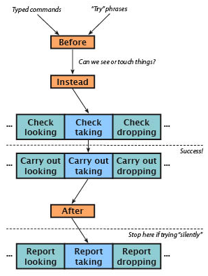

Actions are impulses to do something, which arise sometimes through typed commands:
>examine tapestry
and sometimes through "try" phrases occurring in other rules:
Before examining the tapestry, try switching the ultraviolet light on.
Every action either succeeds or fails, though failure may not be a bad thing (something better may have happened). Besides any rules applied in the source text, actions are subject to basic realism rules. A general rule ensures that actions are rejected if the actor would need to touch something which is out of reach, or see something which is invisible; and a couple of hundred other built-in rules police individual actions. For instance, if the ACTIONS testing command has been used to switch monitoring on, then:
>unlock cage with watermelon
[unlocking cage with watermelon]
That doesn't seem to fit the lock.
[unlocking cage with watermelon - failed the can't unlock without the correct key rule]
Actions generated by "try" phrases are allowed to run "silently", which means that if nothing out of the way happens and they succeed, then nothing is printed. For instance:
Before examining the tapestry: say "(Switching on the lamp first.)"; silently try switching the ultraviolet light on.
There are many ways to impose extra rules on actions, and we have seen three main kinds: Before rules, intended so that preliminary activities like the one above can happen before the action is tried; Instead rules, which block or divert the intention, or may cause something spectacularly different to happen; and After rules, which allow for unexpected consequences after the action has taken place.
The following flow chart shows the natural course of events when Inform deals with a new action – a "taking" action in the case drawn. For quite a long time, the action may still fail, and it may be that nothing actually happens: but eventually a deciding line is crossed, and once that happens the action will certainly succeed.

The coloured boxes on this chart represent "rulebooks", that is, collections of rules with a common purpose. The orange boxes for Before, Instead and After were covered in the Basic Actions chapter, but the blue boxes are new. The orange boxes are where we put rules to handle unusual situations, or unexpected events: special rules to cover the opening of a container which happens to be booby-trapped, or walking through a doorway into a room where a surprise party is about to be sprung.
Blue boxes hold the mundane, everyday rules – the generic ways that particular actions behave. Every action provides these: "Check" rules, to see if it makes sense – for instance, to see that the player is not trying to take his or her own body, or a whole room, or something he or she already has; then "Carry out" rules, to actually do what the action is supposed to do – in the case of taking, to move an object into the player's possession; and finally "Report" rules, which tell the player what has happened – perhaps printing up "Taken."
When we create a new action, we add a new column to the blue rows in this diagram. As we shall see, we can also put new rules into the existing blue boxes: for instance, if we wanted to increase physical realism by forbidding the player to carry more than a certain weight, we would want to add a new "check taking" rule, and this is entirely legal.
In subsequent chapters, we will see ways to intervene at almost every point in the above diagram – from how "Can we see or touch things?" is reckoned, to each and every individual rule in all of these books. Action-processing may be the single most important thing Inform does, so the system is designed to be immensely flexible. On the other hand, that does make it a lot to take in at one look. Newcomers should probably concentrate on "Instead" and "After" as the basic tools for designing the situations turning up routinely in interactive fiction. There are guidelines at the end of this chapter offering advice on which tricks to use when it comes to more complicated needs.
So far, all actions have been carried out by the player: which is fine for exploring the passive world of an empty warehouse, but less good for a drama in which other characters have to be contended with. In fact, an action can be carried out by anybody – by any instance of the "person" kind, that is, which includes all the men, women and animals in the story, and not only the player.
In interactive fiction, players conventionally ask other characters to do something with commands like so:
> will, go west
Clearly "will, go west" should not produce the same action as "go west", because a different person will be trying it: this person is called the "actor", and while the actor is ordinarily the player, here it is the character called Will. Inform distinguishes these two actions like so:
going west
asking Will to try going west
As a result, we can write rules like so:
Instead of asking Will to try going west, say "Will scratches his head, baffled by this talk of westward. Is not the ocean without bound?"
To write rules like this, we sometimes want to generalise about who is supposed to do the deed. To do this we can refer to "person asked", just as the "noun" stands for whatever noun was typed:
Instead of asking somebody to try taking something, say "I don't think we ought to tempt [the person asked] into theft, surely?"
So if the player types "Algy, take sandwich", the "person asked" would be Algy; the "noun" would be the sandwich; and there would be no "second noun".
"Asking … to try …" actions run through their Before and Instead rules like any other actions, but then (if no rule has intervened) something different happens: Inform has to decide whether the person asked consents to try the action or not. By default, the answer is always no, and text like the following will be printed:
> will, go west
Will has better things to do.
However, we can intervene to make the answer "yes", using a special kind of rule which produces a yes/no answer. The following examples show how we can give broad or narrow permission, as we choose:
Persuasion rule for asking people to try going: persuasion succeeds.
Persuasion rule for asking Will to try going west: persuasion succeeds.
Such a rule can either declare that "persuasion succeeds", or that "persuasion fails", or make no decision and leave it to another rule to say. If it decides that persuasion fails, it is also allowed to say something, describing why: in that event, the standard message ("Will has better things to do.") is suppressed. For example,
Persuasion rule for asking Will to try going:
say "Will looks put out, and mutters under his breath.";
persuasion fails.
The following rule, which is really only suitable for testing, makes everybody infinitely obliging:
Persuasion rule for asking people to try doing something: persuasion succeeds.
Supposing that Will does decide to cooperate, a new action is generated:
Will going west
and this is then subject to all of the usual action machinery. For instance, we could write a rule such as:
Instead of Will going west, say "He runs out into the waves, but soon returns, rueful."
So in this case the new action ("Will going west") failed: but the original action, "asking Will to try going west", is still deemed to have succeeded – after all, Will did try. To put it more formally, "asking X to try A" succeeds if the persuasion rules succeed, and otherwise fails.
Note also that "Instead of…" rules written for other people will be treated by Inform as failures, even if we write something like
Instead of Will pulling the cord:
say "The bell rings."
and thus may produce unsatisfactory results such as
>WILL, PULL CORD
The bell rings.
Will is unable to do that.
If we wish to write new successful actions for another character, we will need to create appropriate carry out and report rules for them: these will be explained in the sections to follow.
(Finally, note that the mechanism Inform uses to see if we have printed a refusal message of our own, in the event of persuasion rules failing, can be fooled if we write a persuasion rule explicitly ending with a "[paragraph break]" text substitution.)
Suppose, finally, that Will not only consents to try the action, but it also survives its passage through Before and Instead rules. What happens then? In principle, what happens to Will is exactly what would have happened to the player in his place. For instance:
> will, go east
Will leaves to the east.
If on the other hand Will's attempt is frustrated because one of the checking rules stops him, then Will's action fails. For instance, if Will tries going northeast but there is no room to northeast, one of the rules checking the "going" action will stop him. We will then see this:
> will, go northeast
Will is unable to do that.
This is rather a generic message, and we may want something more interesting. We can provide that using yet another special kind of rule:
Unsuccessful attempt by Will going: say "Will blunders around going nowhere, as usual."
Even that is still a little generic, though, because it treats all of the various ways that "going" can fail as the same. If we have ACTIONS switched on, we can see what goes on behind the scenes when we ask Will to walk into a door:
>will, go west
[asking Will to try going west]
[(1) Will going west]
[(1) Will going west - failed the can't go through closed doors rule]
Will blunders around going nowhere, as usual.
[asking Will to try going west - succeeded]
(The "(1)" lets us know that a new action is starting during the old one, and before the old one finishes: sometimes we go up to three or four deep, though seldom more in practical cases.) We can now rewrite the "unsuccessful attempt" rule like so:
Unsuccessful attempt by Will going:
if the reason the action failed is the can't go through closed doors rule, say "Will looks doubtful and mumbles about doors.";
otherwise say "Will blunders around going nowhere, as usual."
The value "reason the action failed" is set to whichever checking rule threw out the action which Will tried. The names of these rules try to be self-explanatory – at any rate, those with gnomic names are not useful for this sort of thing, and can be ignored – and can be found out either using ACTIONS or by consulting the Actions index.
Finally, note that "unsuccessful attempt" rules apply only when the person in question is being asked to perform the action by somebody else – as in the examples above.
A person who goes along with the player's instructions, but reluctantly, and will get annoyed after too many repetitions of the same kind of unsuccessful command.
The player's actions happen not only when he types a command, but can also happen spontaneously as a result of a "try" phrase.
try going west
try asking Will to try going west
The latter might, of course, result in Will trying going west: or it might not – that depends on the persuasion rules. But as the author, we have the ultimate powers of persuasion, and can make Will act in any way we like, without asking:
try Will going west
Nobody in the simulated world requested this: it is an impulse felt by Will alone, so that – from the player's point of view – Will is acting spontaneously. The player need not be anywhere nearby, and may never know what happened. Recall that when actions work their way down through the flow-chart, they are stopped before reaching the "report" stage – when the player is told about them – if they are running "silently". This is also where Inform stops an action which is not witnessed by the player.
To repeat a point in the previous section: "unsuccessful attempt" rules do not apply to actions which the author has caused to happen, using "try". When such actions fail, they invoke no special set of rules. Indeed, when "try" causes somebody other than the player to try an action, nothing will be printed to report back on success or failure. If Will can't go west, that's his problem.
Note that the text "try Will going west" involves the actor's name immediately placed next to the action he is to try, which in a very few cases might cause ambiguities. If the actor's name contains a participle like "going" – say, if Will's full name turned out to be Mr Will Going – then we would have to write out the action name in full, using "trying" to clarify matters:
It is not often that we need to create new actions, but a large work of interactive fiction with no novelty actions is a flavourless dish. Here we shall create an action for photographing things.
The Ruins is a room. "You find this clearing in the rainforest oddly familiar." The camera is in the Ruins. "Your elephantine camera hangs from a convenient branch."
Photographing is an action applying to one visible thing and requiring light.
In theory that text is already sufficient to make the new action, but what we have so far is rudimentary to say the least. The two qualifications give Inform the useful information that we cannot photograph in the dark, and that we need to be photographing something – not, as in the case of waiting or taking inventory, acting without reference to any particular thing external to ourselves.
The word "visible" here tells Inform that we do not need to be able to touch the thing in question: a line of sight is good enough. These two stipulations were necessary because the default arrangement is that any object must be in touching range, and that most actions can be performed in darkness. (Also, note that if you invent an action which needs to apply to directions like "north" or "south", you need to make this apply to visible things, because the object used inside Inform to represent the idea of "north" can be seen but not touched. So for understanding purposes, "visible thing" is understood as meaning any visible thing or direction: it's more general than "thing", not more specific.)
Occasionally, when writing general rules about actions, it can be useful to find out what the current action's requirements are: the following conditions do what they suggest.
if action requires a touchable noun:
This condition is true if the action being processed is one whose (first) noun is an object which needs to be touchable by the actor. For example, it's true for "taking", but false for "examining".
if action requires a touchable second noun:
This condition is true if the action being processed is one whose second noun is an object which needs to be touchable by the actor. For example, it's true for "putting the brick in the sack", but false for "throwing the brick at the window".
if action requires a carried noun:
This condition is true if the action being processed is one whose (first) noun is an object which needs to be carried by the actor. For example, it's true for "dropping", but false for "taking".
if action requires a carried second noun:
This condition is true if the action being processed is one whose second noun is an object which needs to be carried by the actor.
if action requires light:
This condition is true if the action being processed is one which can only be performed if the actor has light to see by. For example, it's true for "examining", but false for "dropping".
As further examples, here we create "blinking" and "scraping X with Y". Note the use of "it" to indicate that the name of an object should go here.
Blinking is an action applying to nothing. Scraping it with is an action applying to two things.
The photographing action now exists, but with two provisos: (a) it never happens, because Inform does not know what commands by the player should cause it, and (b) even if it were to happen, nothing would follow, because Inform does not know what to do. (There are no check, carry out or report rules yet.)
The first problem is easily overcome:
Understand "photograph [something]" as photographing.
We will return to the whole subject of parsing, as this process of understanding the player's commands is called, later. But this gives the gist of it.
Our three example actions can be recognised in play using the following:
Understand "photograph [something]" as photographing.
Understand "blink" as blinking.
Understand "scrape [something] with [something]" as scraping it with.
The last of these examples shows why Inform does not risk generating this automatically: English is so full of irregular verbs. Inform could have guessed "blink" and "photograph", but might then have opted for "scrap" instead of "scrape".
Inform does risk automatically generating the past participle of an action. (Many past participles are never needed, so the stakes are lower if Inform gets this wrong.) What usually happens is that the "-ing" is replaced with "-ed", thus photographed, blinked, scraped – but Inform has a dictionary of some 460 irregular exceptions, such as caught, fled, crossbred, taken, woven. So with luck Inform will guess correctly. If not, we can get around this like so:
Squicking is an action with past participle squacked, applying to one thing.
The normal behaviour of an action is specified by its three associated rulebooks – check, carry out and report. In the case of our "photographing" example, these rulebooks will be:
Check photographing. Here, for instance, we need to verify that the player has the camera. If any of our checks fail, we should say why and stop the action. If they succeed, we say nothing.
Carry out photographing. At this stage no further checking is needed (or allowed): the action now definitively takes place. At this point we might, for instance, deduct one from the number of exposures left on the film in the camera, or award the player points for capturing something interesting for posterity. But we should say nothing.
Report photographing. At this stage no further activity is needed (or allowed): whatever effect the action had, it has happened and is now over. All we can do is to say what has taken place.
So far we have not really gone into the business of what rulebooks are, and we don't do so here either – suffice to say that we can now create whatever rules we need:
A check photographing rule:
if the camera is not carried:
say "You can hardly photograph without a camera, now can you?" instead.
In fact, writing "a check photographing rule" is over-formal. We can more simply label our rules like so:
Check photographing:
if we have photographed the noun:
say "You've already snapped [the noun]." instead.
Report photographing: say "Click!"
For the sake of brevity, photography has no interesting consequence (no points to be won, no film to use up), so there are no carry out rules here. Note the way we used the word "instead" once again to stop actions in their tracks.
We can continue to add rules at any point, and a classic thing that happens when testing a new work is that the designer realises there is a case which has not been thought of:
Check photographing:
if the noun is the camera:
say "That would require some sort of contraption with mirrors." instead.
For some complex situations, it can be useful to keep track of a few values throughout the processing of the action. This is not an everyday occurrence: in the Standard Rules, for instance, only two or three out of 90 actions need to do this. But suppose we want to write a more deluxe version of our "photographing" action. This time, rather than having a single thing called the "camera", we will provide a whole range of possible cameras, varying in quality:
Photographing is an action applying to one visible thing and requiring light. Understand "photograph [something]" as photographing.
The Studio is a room. Sally is a woman in the Studio. A foam-lined tote bag is in the Studio.
A camera is a kind of thing. A camera has a number called picture quality. The digital SLR camera is a camera in the tote bag. The player carries a camera called the instant one-shot camera. The picture quality of the SLR camera is 10. The picture quality of the one-shot is 2. Definition: a camera is sharp if its picture quality is 5 or more.
And we will want the photographing action to have the player use the best-quality camera which comes to hand. We will give the action a variable called the 'camera photographed with', thus:
The photographing action has an object called the camera photographed with.
Every action's variables must be named differently from those of all other actions, because there are some "before" rules (for instance) which take effect for many different actions, and which might need access to any of their variables. So action variables should be named in a way marking out to which action they belong. The best way to do this is to include the past participle of the action name – just as "camera photographed with" contains the past participle "photographed" of the action "photographing".
This value is created when the action begins, and disappears when the action ends. (If the action should happen a second time before the first time was completed, a second copy of the value is created, leaving the original undisturbed.) When the action begins, the value starts out as something neutral – so if it is a number, it starts out as 0, if a text, it starts out as the blank text "", and so on. Here it is an object, so it starts out as nothing – the value meaning no object at all. But of course we want to give it a value ourselves. We can do that using the "setting action variables" rulebook. For instance:
Setting action variables for photographing:
now the camera photographed with is the sharpest camera which is carried by the actor.
The "setting action variables" rulebook is run through before even the before rules, and it has no power to stop or change the action. Its rules should say nothing and do nothing other than to set rulebook variables like this one. Note that it is intended to work for any actor, not only the player: so rather than referring to the player as the performer of the action, we need to write "the actor", as in the example above. (See subsequent sections for more on actors.)
We can now write rules such as:
A check photographing rule:
if the camera photographed with is nothing:
say "You can hardly photograph without a camera, now can you?" instead.
Only rules to do with the photographing action – before, instead, after, check, carry out, or report rules, and so on – are allowed to see the 'camera photographed with' value: it's the private property of the action.
A further elaboration allows us to make rules about photographing neater to write. If we create our variable like so:
The photographing action has an object called the camera photographed with (matched as "using").
…then we are now allowed to add an optional 'using …' clause onto a description of the action. The clause has to be introduced with a single word: here, it's 'using'. For instance, we could write rules such as
Instead of photographing something using the one-shot camera:
say "But you promised to give this to Sally's nephew."
Check photographing something using the noun:
say "That would require some sort of contraption with mirrors." instead.
Report photographing something using a sharp camera:
say "You feel cool and important as the shutter clicks."
(This is the method used by the Standard Rules to attach optional clauses such as 'to', 'with' and 'through' to the going action.)
A system in which every character has a body, which is left behind when the person dies; attempts to do something to the body are redirected to the person while the person is alive.
Adding special reporting and handling for objects dropped when the player is on a supporter, and special entering rules for moving from one supporter to another.
The "photographing" action now works very nicely when the player does it. But not when others try. Suppose that neither the player, nor Clark Gable, is holding the camera:
>photograph clark
You can hardly photograph without a camera, now can you?
>clark, photograph me
>
An uncanny silence. What has happened is that the rules written so far are all implicitly restricted to the player only. This is because when we write -
Check photographing:
if the camera is not carried:
say "You can hardly photograph without a camera, now can you?" instead.
the action is "photographing", not "Clark photographing". In the next few sections we shall see how to make the rules work nicely for everybody. This is a little bit harder, so it should be noted right away that in many projects there is no need. In a story which has no other characters who succumb to persuasion, for instance, only the player will ever try the action.
If we want to impose the restriction about carrying the camera on other people, we need a rule like the following:
Check someone photographing: if the person asked does not carry the camera, stop the action.
Implicitly, that "someone" excludes the player. Note that we say nothing in this rule, stopping the action without a word: after all, Clark might well be out of sight when trying this. If he is within sight, then we read:
>clark, photograph me
Clark Gable is unable to do that.
We saw before that Inform's built-in rules all have handy names (the "can't drop what's already dropped rule", and such), and that these are useful when writing better "unable to…" messages. So for a deluxe version, we end up with:
Check someone trying photographing (this is the other people can't photograph without the camera rule): if the person asked does not carry the camera, stop the action.
And now, with ACTIONS on, we find that:
>clark, photograph me
[asking Clark Gable to try photographing yourself]
[(1) Clark Gable photographing yourself]
[(1) Clark Gable photographing yourself - failed the other people can't photograph without the camera rule]
Clark Gable is unable to do that.
[asking Clark Gable to try photographing yourself - succeeded]
which means that we could have, say,
Unsuccessful attempt by Clark photographing:
if the reason the action failed is the other people can't photograph without the camera rule, say "Clark is too suave to be embarrassed. 'Frankly, my dear, I don't have a camera.'";
otherwise say "Clark tries, and fails, to take a photograph."
Changing the check rules to try automatically leaving a container before attempting to take it. (And arranging things so that other people will do likewise.)
Allowing characters other than the player to give objects to one another, accounting for the possibility that some items may not be desired by the intended recipients.
Report rules for the player's actions are easy to write, and for many actions, they are not much harder for other people either:
Report photographing: say "Click!"
Report someone photographing: say "Click! [The person asked] takes a snapshot of [the noun]."
But once other people are involved, we have to go to some trouble to get all of the possibilities right. Here is a case which did not immediately occur to the author of the "going" action, for instance:
>get in cage
You get into the cage.
>clark, get in automobile
Clark Gable gets into the automobile.
>clark, push cage west
Clark Gable goes west in the automobile, pushing the cage in front, and you along too.
The Lot (in the cage)
In the Lot you can see an automobile (in which is Clark Gable).
We said before that report rules are skipped if the action is running "silently", or if the action is one that the player does not witness. But that is also a tricky concept. Inform's doctrine is that you witness an action if you can see any of the actor, the noun or the second noun at either the beginning or the end of the action; except that being able to see a backdrop does not count. Thus if Clark Gable, in Beverly Hills, photographs the Hollywood sign then we do not witness this from Sunset Boulevard merely because we, too, can see the Hollywood sign.
While the report rules for actions by the player must actually report something, report rules for other people's actions are under no such obligation. For instance, if Clark unlocks a door from the other side to the player, then this counts as an action that the player witnesses – and after all, it could be argued that the player should hear the key turning in the lock – but in fact the standard rules for reporting locking choose to say nothing.
In the previous sections, we created a new action by providing one set of rules for the player and another for anybody else who might try to perform it. These rules began with action descriptions in one of the following forms:
Instead of taking a container, ...
Instead of P taking a container, ...
The first form implies that the player must be performing the action: the second allows for any person matching P to be the action, except that this person must not be the player. That means that all rules seen so far either affect only the player, or only other people.
This is often convenient, but sometimes we need to set up a complicated action which really does work in the same way for every actor – for instance, the built-in Inform actions provided by the Standard Rules aim to do this. We can write such rules thus:
Instead of an actor taking a container, ...
Here the rule applies to anyone who tries taking a container, player or not. Inside such a rule, the special value 'the actor' is the person performing the action. For instance, the Standard Rules include this one:
Carry out an actor wearing (this is the standard wearing rule):
The actions seen so far are all impulses causing the protagonist inside the fictional world to do something, or at least try to. But when the player types "quit" or "save", that is not a request for anything to happen in the fictional world: it is an instruction to the program simulating that world. In fact, just the same, such requests are treated as actions, but of a special category called "out of world" actions. They do not cause time to pass by, so the turn counter does not advance, nor does this command cycle count as a turn at all; and they are altogether exempt from "Before", "Instead" and "After" rules. Only the player is allowed to try them.
We can also create new out-of-world actions. Suppose we want a dialogue like so:
>ROOMS
You have been to 1 out of 8 rooms.
Here is a complete implementation:
Requesting the room tally is an action out of world.
Report requesting the room tally: say "You have been to [number of visited rooms] out of [number of rooms] room[s]."
Understand "rooms" as requesting the room tally.
It is important not to use "out of world" actions for anything affecting what goes on in the fictional world, or realism will collapse, and action-processing may also fail to work in the usual way. "Out of world" actions should be reserved for providing commands like ROOMS, which monitor events rather than participate in them.
In some of the late 1970s "cave crawl" adventure games, an elaborate scoring system might still leave the player perplexed as to why an apparently perfect play-through resulted in a score which was still one point short of the supposed maximum. Why only 349 out of 350? The answer varied, but sometimes the last point was earned by never saving the game – in other words by playing it right through with nothing to guard against mistakes (except perhaps UNDO for the last command), and in one long session.
The flow chart back at the start of this chapter shows that, early on in processing an action (between Before and Instead), Inform asks the question "Can we see or touch things?" This is where it enforces the requirements in the action's definition:
Photographing is an action applying to one visible thing and requiring light.
Scraping it with is an action applying to two things.
Seeing and touching are two different questions, which Inform answers in different ways. We shall see ways to modify or entirely alter what can be seen using the "deciding the scope of something" activity when we get to the Understanding and Activities chapters, and later in this chapter we will change the definition of touchability. What both have in common is that they are complicated questions, affected by the circumstances. We cannot simply declare that the player can touch a given lever, or can see in a given room: we must arrange for there to be no barriers between the player and the lever, or for there to be a light source in the room.
An example of rules applying to given objects is provided by the way that Inform decides whether the player can reach something or not. For instance, suppose the following:
The Laboratory is a room. In the Laboratory is a conical flask. The flask is closed and transparent. In the flask is an antibumping granule.
The player will be able to examine the granule but not to take it, as that would require reaching through glass. Suppose the player does type TAKE GRANULE: then Inform looks for potential barriers between the player and the granule, and of course finds the conical flask. If, as in this case, the thing to be touched is on the inside, then Inform asks the "reaching inside" rules for permission. There are two reaching inside rules built in to Inform:
can't reach inside rooms rule
can't reach inside closed containers rule
and in fact the second of these rules will cause the taking action to fail, because the conical flask is a closed container. (The other rule has to do with a player in one room able to see another room through, say, a telescope – merely having a line of sight doesn't give the ability to reach into the frame.)
Symmetrically, Inform also has "reaching outside" rules, used if the player is inside something and wants to reach an object in the wider room. (From a bed, probably yes; from a cage, probably no.) This ordinarily contains just one rule:
Photographing is an action applying to one visible thing and requiring light.
Depositing it in is an action applying to two things.
Taking inventory is an action applying to nothing.
Actions can involve up to two different things. We can place additional requirements on any of these things by describing them as a "visible thing", "touchable thing" or "carried thing". (If we simply say "thing" or "things", as in the second example, Inform assumes the requirement to be "touchable".) These three conditions are increasingly strong:
- To be "visible", something needs only to be possible to refer to by the player, which in practice means that it must be visible to the player-character. The noun or second noun produced by any action resulting from a command at the keyboard will always satisfy this minimal condition.
- To be "touchable", the player-character must be able to physically touch the thing in question: this normally means that it must be in the same room, and there must be no physical barriers in between.
- To be "carried", the player-character must (directly) carry the thing in question. (But if the player types a command using an action requiring something "carried", like WEAR HAT, the thing in question – the hat – will sometimes be picked up automatically. This is called "implicit taking", and results in text like "(first taking the top hat)" being printed.)
If an action involves two things, they need not have the same requirement as each other:
Waving it at is an action applying to one carried thing and one visible thing.
Thus to "wave magic wand at banyan tree", the player must be holding the wand, but need only be able to see the tree.
Note one special case. Requirements on touchability are waived in the case of "try" actions applied to people other than the player where the things they would need to touch are doors or backdrops. (This is a compromise to avoid difficulties arising from the ambiguous locations of such items.)
The question of what the player can, and cannot, reach to touch is important in interactive fiction. It contains some of the subtlest ideas in the model world, though they often go unnoticed. For instance, if a key is on a shelf which is part of a closed box, can we reach for the key? This comes down to whether the shelf, described only as "part of" the box, is on the inside or the outside: and in fact, because it cannot know which is the case, Inform allows either. So in general it is best to regard "parts" as being exterior parts, but to avoid having parts on containers that might in the course of play be closed up with the player inside.
We can, if we wish, change the principles of what can be touched by writing new reaching inside or reaching outside rules. Returning to the example of the conical flask:
A rule for reaching inside the flask: say "Your hand passes through the glass as if it were not there, chilling you to the bone."; allow access.
(Or this could equally be called "a reaching inside rule for the flask".) More generally, we could give the usual flexible description of what the rule applies to:
A rule for reaching inside open containers: say "Your hands seem enigmatically too large for [the container in question]."; deny access.
The "container in question" is the one to which the rule is being applied. Note that a reaching inside rule can "deny access" (stopping with failure), or "allow access" (stopping with success), or neither, in which case the decision is left up to any subsequent rules in the rulebook to make. If none of them decide, access is allowed.
If it seems possible that these rules will be employed by people other than the player, then we need to write them a little more carefully, and in particular we need to ensure that they print nothing for other people. In the first case below, anybody can reach through the glass; in the second case, only the player cannot reach into open containers.
A rule for reaching inside the flask:
if the person reaching is the player, say "Your hand passes through the glass as if it were not there, chilling you to the bone.";
allow access.
A rule for reaching inside open containers:
if the person reaching is the player:
say "Your hands seem enigmatically too large for [the container in question].";
deny access.
The "person reaching" is, as its name suggests, the person trying to reach through the barrier in question.
Ordinarily, Inform has a simple model for visibility: it is either fully light or it is fully dark, and certain actions are impossible in the dark, such as examining something.
We first need to remember that darkness affects what actions are even tried, as far as the player's typed commands go. If the player is in a dark room, and there is a screwdriver on the floor, the command EXAMINE SCREWDRIVER will not try any action: the screwdriver is not "in scope", which means that the parser thinks the player does not have any means of knowing it exists. (The rules for scope can be modified – see the chapter on Activities.) But let's suppose that the player types EXAMINE BOOK, and is holding the book in question. The book is now "in scope", so the action "examining the book" is tried.
Some actions require light to be present, and "examining" is one of those. So Inform consults the visibility rules to see if it can go ahead. By default, there is only one visibility rule, which says "yes" in the light and "no" in darkness. Here, though, we create another one:
Visibility rule when in darkness:
if examining the book:
say "You have to squint. Still...";
there is sufficient light;
there is insufficient light.
A visibility rule must always conclude "there is sufficient light", or "there is insufficient light", or else do nothing and leave it to other rules to decide.
It is a possibly unexpected fact that "looking" does not require light, but instead behaves differently in darkness – it prints a pseudo-room-description such as
Darkness
It is pitch dark, and you can't see a thing.
instead of printing the description of the player's current room. This means that the "looking" action is unaffected by visibility rules. All the same, what "looking" does in the dark can be changed by using the two activities "printing the name of a dark room" and "printing the description of a dark room" (see the Activities chapter for details).
Visibility set so that looking under objects produces no result unless the player has a light source to shine there (regardless of the light level of the room).
As we have seen, to describe an action fully takes a complicated little bundle of information – we need to know what is to be done, who will do it, and what it will be done to. There are times when we would like to remember an action and look back on it later (perhaps many turns later, after many other actions have taken effect) – but this is not easy to do with only the techniques we have seen so far. There are quite a few cases to get right, and it would be easy to not store quite enough of the details.
Fortunately, Inform provides a kind of value called "action" which can do all of this automatically. (In older versions of Inform this was called "stored action", but the word "stored" is now unnecessary, and makes no difference.) As with most other kinds of value, actions can be held in variables, "let" values, properties or table columns. For example:
The best idea yet is an action that varies.
creates a variable called "the best idea yet" which holds an action.
This will normally be created holding the default value – the player waiting. We really only have two ways to make more interesting actions. One is by typing them out explicitly, like so:
now the best idea yet is pushing the button;
Here "pushing the button" is a constant of the kind "action", so it goes into happily into "best idea yet" in the same way that a number like 3 could go into a number that varies. The action must be specific in every respect, so "taking something" or "doing something" will not work – "taking something" is really a general description of many possible actions, not an action in its own right.
The other way to produce a useful action is:
current action ⇒ action
This phrase produces the action currently being processed as a value – it literally stores the action, and remembers, if necessary, the exact wording of the player's command at the time it was stored – so that even actions arising from commands like LOOK UP X100 IN THE CODE BOOK can be stored faithfully. Examples:
let the present whim be the current action;
say "How you would like to be [current action].";
This only makes sense if an action is currently going on, so it shouldn't be used in "every turn" rules, for instance.
So much for making actions: now for making use of them. The first obvious idea is to store up an action for several turns and then have it take effect later. That's easily done: just as we can "try" any action written out explicitly, so we can also try a stored one. The phrase to do this has exactly the same wording either way, since it does the same thing either way.
But actions can still be useful even if we never intend to try them. For one thing, we can say them, and this produces a fairly natural description of what the action is:
Before doing something in the presence of the bearded psychiatrist: say "'Zo, the subject vishes to engage in [the current action]. Zis is very interesting.'"
will produce text such as:
"So, the subject vishes to engage in rubbing the fireman's pole. Zis is very interesting."
One of Inform's most convenient features is its ability to test if the action being processed matches vague or complicated descriptions of whole classes of actions. For example,
if the best idea yet is taking something, ...
works even though "taking something" is not a single action; it's a description which could apply to many different actions (taking a box, taking a ball, and so on). What Inform tests is whether the "best idea yet" value, a single action, fits this description or not. We can be even vaguer:
if the best idea yet is doing something to the lever, ...
Just occasionally, this can lead to ambiguities. For instance,
if the current action is wearing something, ...
fails because Inform thinks "wearing" is meant in the sense of the current action having clothes on, so it produces a problem message. To avoid this, simply write:
if the current action is trying wearing something, ...
which can't be misunderstood. Something else to be aware of is that the terms "actor", "noun" and so on will refer to that action: for instance, in
if the best idea yet is taking the noun, ...
"noun" here refers to the noun in "best idea yet", not to its meaning outside of this phrase (if indeed it has such a meaning).
When dealing with actions, we sometimes want to know what they are dealing with. We can extract this information using the following phrases:
action name part of (action) ⇒ action name
This phrase produces the action name part of an action. Example: suppose the current actor is Algy, who is throwing the brick at Biggles. Then
action name part of the current action = throwing it at action
noun part of (action) ⇒ object
This phrase produces the (first) noun of an action. Example: suppose the current actor is Algy, who is throwing the brick at Biggles. Then
noun part of the current action = the brick
If the noun is something other than an object, this produces just "nothing", the non-object.
second noun part of (action) ⇒ object
This phrase produces the second noun of an action. Example: suppose the current actor is Algy, who is throwing the brick at Biggles. Then
second noun part of the current action = Biggles
If the second noun is something other than an object (for instance for the command SET DIAL TO 3417 it would be the number 3417), this produces just "nothing", the non-object.
actor part of (action) ⇒ object
This phrase produces the person who would be carrying out the action if it were being tried. Example: suppose the current actor is Algy, who is throwing the brick at Biggles. Then
actor part of the current action = Algy
The following phrase is a convenient shorthand form:
if (action) involves (object):
This condition is true if the object appears as any of the actor, the noun or the second noun in the action. Example:
if the current action involves Algy
would be true for "give revolver to Algy", "Algy trying flying the Sopwith Camel", "examine Algy" and so on, but false for "ask Raymond about secret airfield".
action of (an action) ⇒ action
This phrase is now seldom needed. It produces a literally typed action as a value. Example:
now the best idea yet is the action of pushing the button;
Nowadays in most contexts we can just type "pushing the button" as a value, and that will work fine, so this phrase is retained only to keep old code working.
The player carries a gizmo that is able to record actions performed by the player, then force him to repeat them when the gizmo is dropped. This includes storing actions that apply to topics, as in "look up anteater colonies in the guide".
Looking at the action-processing diagram, there seem to be a bewildering number of ways to intervene. For instance, suppose it must be fatal to pick up a land mine. All six of the following rules would do the business:
Before taking the land mine: end the story saying "Bang!"
Instead of taking the land mine: end the story saying "Bang!"
Check taking the land mine: end the story saying "Bang!"
Carry out taking the land mine: end the story saying "Bang!"
After taking the land mine: end the story saying "Bang!"
Report taking the land mine: end the story saying "Bang!"
So which should we use? Of course, we could decide that it really doesn't matter: what works, works. But it is a good idea to play along with the conventions used by Inform, if only because that will make our rules interact better with each other and with rules by other people which we may someday want to borrow. So this chapter ends by offering a few guidelines. Let us suppose that we have some effect which we want to achieve.
1. Are we just trying to correct the player's typing?
For instance, responding to the command "STEAL GOLDEN EAGLE" with a reply like "To steal something, just try to TAKE it." It is bad style to make a special action for this, which does nothing except to print up this text: better is to use the "Understand … as a mistake" technique, which will come up in the chapter on Understanding.
2. Does the effect apply only to a particular situation, or is it a general phenomenon?
In other words, does the effect apply only to particular people, things or places, or is it a generic rule of play? In the case of the land mine, this is an easy question to answer: it is a unique situation. On the other hand, stopping the player from carrying unduly heavy weights would be a generic rule of play.
Rules like the one saying that photography is only possible if one holds the camera are, by convention, also counted as generic rules of play: they are not really special rules about the camera, but apply to all possible acts of photography anywhere, so are actually generic.
Sometimes we can choose our own answer to this question, and go either way. Suppose we want a certain place to be muddy-floored, affecting things that happen there. One way would be to write exceptional rules applying to that one room. But we could alternatively create a general concept of muddiness ("A room can be clean or muddy. A room is usually clean.") and then regard the new behaviour as being a set of generic rules applying in muddy rooms. We could then, of course, create a second muddy room with much greater ease, or transplant these rules to other works and have muddy rooms in those too.
3. Particular situations: use Instead or After (or sometimes Before).
The next question is: does the effect kick in after the hoped-for action has taken place, or not? In the case of the land mine, to answer that means deciding whether we think the detonator is sensitive to the slightest touch – in which case the explosion would happen at the first touch, and should be in an "Instead" rule – or whether one must actually pick up and disturb the mine – in which case an "After" should be used.
That leaves us a choice of two rulebooks if the effect takes place when the merest impulse towards the action is felt: "Before" and "Instead". Which to use? In cases of doubt, choose "Instead". But if the effect is intended to absolutely suppress all such impulses – for instance, in a silent examination room there must be no talking – then "Before" might be more appropriate. We could imagine that someone about to say something first has a mental impulse to speak, then opens his mouth so that it becomes visible to others that some talking is about to go on, and finally utters words. Here are three possible responses:
"You cannot contemplate breaking this smothering silence." (Before)
"The invigilator stares you down through her horn-rimmed glasses." (Instead)
"Everyone turns, appalled, as the silence is broken like the surface of a swimming pool by a falling elephant." (After)
4. Generic situations: work with action rules (or sometimes Before).
(a) If the effect takes place only when an action is definitely being tried, then we should use one of the action's three rulebooks: check, carry out or report. Check rules should do nothing, and should say nothing either unless they block the action (in which case, they should say why).
Carry out rules must not block the action – it is too late for that – and should not say anything – that hasn't happened yet. (There are a few exceptions: if the action is to look at something, then carrying it out is in a sense the same thing as reporting it. But in all cases of doubt, a carry out rule should say nothing.) Adding a carry out rule to an existing action can make it do something extra.
Report rules must neither block the action nor do anything. Working with new report rules is a way to make more natural-seeming, or more informative, messages appear. For instance, an effect where we want to be able to see through a door when it is first opened ("You open the panelled door, through which is the Board Room.") would be a case for a report rule.
In all cases, it is good style to write check, carry out or report rules in such a way that they could be used in other works too, or in situations that could conceivably have happened in this one (even if in fact it never does). We may one day want to put our new rules into an extension to be used by other people or in other projects, after all.
In this chapter, we have only seen the addition of new rules. We could add a new "check taking" rule, for instance, with the techniques seen so far. But what if the effect we want is not a matter of adding a rule but taking away, or restricting the applicability, of an existing one? In that case, we will need to say that the rule "does nothing" under certain circumstances (see the Rulebooks chapter). The check, carry out and report rules for all of the built-in actions are named, and they appear in the Actions index.
(b) If the effect takes place to divert or supplement an action, before that action actually takes place, then this should be done with a "Before" rule. This is the biggest practical use of "Before" rules: to try other actions, either instead or as well as the one just getting under way.
For example, if we want an automatic mechanism to try opening a container before taking something inside it, that would be a classic case for "Before". Indeed, that is the only way it could work – "Before" rules have a chance to get in before the touchability conditions are tested.
If we wanted a special "stealing" action for the act of taking another person's possessions, we might want to divert any taking action for such items into our new "stealing" action – that too would be a "Before". This would ensure that any "Instead" rules to do with taking do not apply.
5. Changing the behaviour of out-of-world actions.
Remember that "Instead", "Before" and "After" do not apply: so use "check" rules to forbid certain out-of-world activities, or specify that their rules do nothing (see the Rulebooks chapter).
Finally…
These are only guidelines. The system is designed to be flexible in order to give the author the widest possible range of options, and nobody should feel ashamed of making use of them.